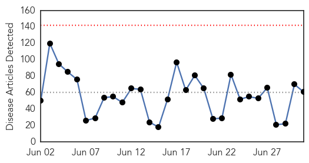
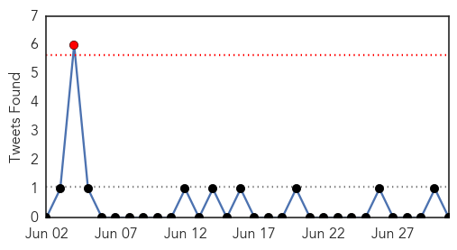
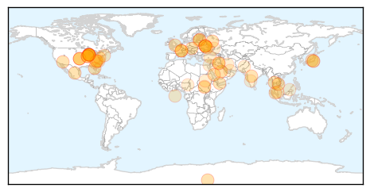
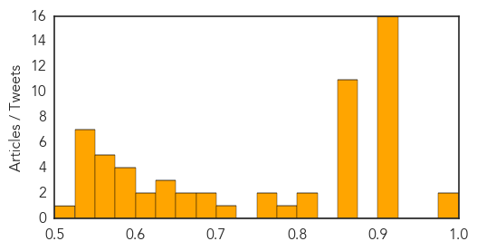

Toggle navigation
Early Warning
Daily Alerts
Unknown
Jul 01, 2014
Compare to:
-
Dengue Fever
Hemmorhagic Fever
Mold/Fungal Infection
Influenza
Meningitis
Pertussis / Whooping Cough
Middle East Respiratory Syndrome
Cholera
Hepatitis
Chikungunya
Yellow Fever
Bubonic Plague
West Nile Virus
Swine Flu
Ebola
Measles
Mumps
30 Day Trends
Web: 0
alerts
, 0
warnings
Twitter: 1
alerts
, 0
warnings
Top Articles:
Showing top 50 articles...
0.986
the edge of knowledge
0.983
8th Legionnaires' case confirmed; cases now suspected beyond health facilities
0.917
Chicago Tribune
0.917
Chicago Tribune
0.917
Chicago Tribune
0.917
Chicago Tribune
0.917
Chicago Tribune
0.917
Chicago Tribune
0.917
Chicago Tribune
0.917
Chicago Tribune
0.917
Chicago Tribune
0.917
Chicago Tribune
0.917
Chicago Tribune
0.917
Chicago Tribune
0.917
Chicago Tribune
0.917
Chicago Tribune
0.917
Chicago Tribune
0.910
The world windows to Thailand
0.867
Camel deaths in Ibb raise MERS concerns
0.866
News, Information and Connections for Action
0.866
CAMBODIA PRESS-Cambodia, China drafting agreement to curb bride trafficking
0.866
ISIL leader vows revenge for wrongs committed against Muslims
0.866
Putin vows to protect ethnic Russians abroad after Ukraine truce expires
0.866
Russia's Putin accuses Ukraine of using "blackmail" in gas talks
0.866
UN rights office urges restraint after Israeli teens' bodies found
0.866
Japan will not take part in combat like Gulf, Iraq wars
0.866
Russia hints at US influence in Ukraine's decision on truce
0.866
Russia's parliamentary speaker wants new ceasefire in east Ukraine
0.858
Patients recruited for vital studies on MERSHealthcare
0.809
Codex panel framing new guidelines on global food trade
0.807
Health Ministry urges vaccinations against encephalitis
0.783
Third baby in feed probe dies
0.766
Boy with Japanese Encephalitis out of danger zone
0.763
Student down with Japanese Encephalitis shows improvement, says doctor
0.701
CDC says anthrax exposure ‘highly unlikely’
0.680
Patients Killed in Beds, Health Care Destroyed in South Sudan
0.679
No CDC Lab Workers Seem Sickened by Anthrax: Report
0.660
Legionnaires Reported at Winston-Salem Nursing Facility
0.656
Dr. Steven N. Rice Now Offers Laser Gum Disease Treatment to Germantown, MD Residents
0.643
Russia put restrictions of pork imports from Latvia due to African Swine Fever (ASF) - Agribusiness - Agri.eu
0.640
Latvia may declare state of emergency to cope with African swine fever
0.636
Latvia may declare state of emergency to cope with African swine fever
0.614
South Sudan Conflict: Violence Against Healthcare - South Sudan
0.604
U.S. CDC tests suggest anthrax exposures 'highly unlikely'
0.595
CDC tests suggest anthrax exposures 'highly unlikely'
0.594
These 'top ten' parasites in your food can kill you: UN
0.576
Video: Top Kurdish spy chief says French jihadists fighting in Iraq
0.576
US pressure on French banks ‘blackmail’ over warship sale, Putin says
0.571
WMBFNews.com, Myrtle Beach/Florence SC, Weather
0.568
Former French president Sarkozy detained for questioning
Top Tweets:
No tweets found for Jul 01, 2014
Web/News Articles

Tweets

Article Locations

Article Confidences
